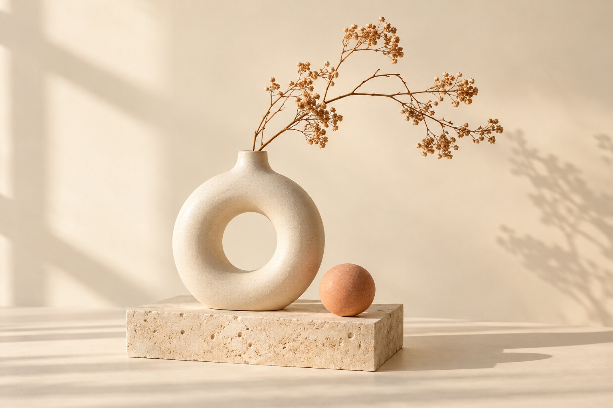

하나의 프롬프트가 장면이 되기까지
제작 과정 · 튜토리얼 기획
아이디어에 움직임을 더하고, 장면에 이야기를 담습니다.
AI 영상 제작을 위한 기획과 실험을 기록합니다.

The art of평범한 사물에 머무는 빛을 따라가는 짧은 영상. 정지된 이미지가 움직이는 이야기로 확장되는 과정을 실험합니다.
영상 에세이 30초 기획현재는 썸네일과 기획 예시입니다. 실제 영상은 추후 등록 예정입니다.
제작 과정 · 튜토리얼 기획
숏폼 · 스토리보드
학습 기록 · 영상 에세이
00–05초 · 도입 크림색 배경 위로 오후의 빛이 서서히 번집니다. 05–15초 · 관찰 화병의 곡선과 마른 식물의 질감을 가까이 보여 줍니다. 15–25초 · 전환 카메라가 천천히 뒤로 이동하며 전체 공간을 보여 줍니다. 25–30초 · 마무리 “평범한 순간에도 이야기가 있다”라는 문장으로 마무리합니다. 제작 계획 예시이며, 아직 영상 파일은 등록되지 않았습니다.
PORTFOLIO SAMPLE · 예시 콘텐츠문제 제시 → 프롬프트 작성 → 이미지 비교 → 배운 점 정리. 화면 녹화와 짧은 자막으로 제작 과정을 설명하는 영상 기획입니다. 실제 영상 등록 전의 임시 기획입니다.
PORTFOLIO SAMPLE · 예시 콘텐츠도입 5초: 오늘의 질문 제시. 전개 20초: 하나의 AI 활용 사례와 확인할 점 소개. 마무리 5초: 핵심 메시지 한 문장. 실제 영상 등록 전의 임시 기획입니다.
PORTFOLIO SAMPLE · 예시 콘텐츠수업 노트, 실습 화면, 완성된 작업을 순서대로 연결합니다. 나레이션은 도구 소개보다 시행착오와 발견에 집중합니다. 실제 영상 등록 전의 임시 기획입니다.